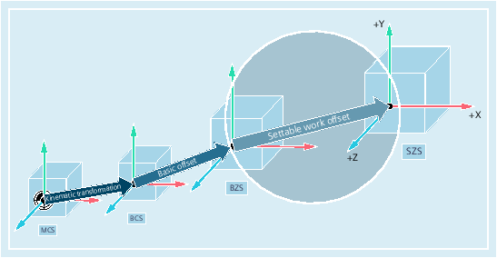
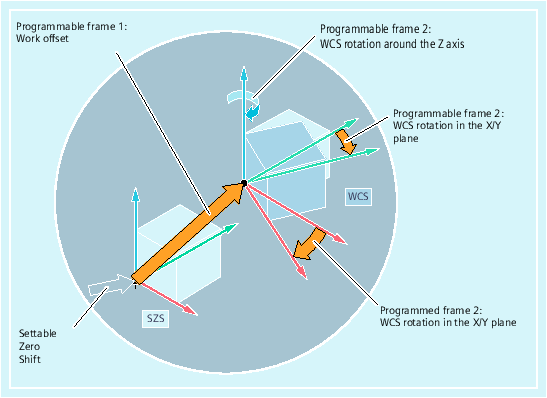

The "settable zero system" (SZS) is obtained from the basic zero system (BZS) as a result of the settable work offset.
Settable work offsets are activated in the NC program with the G commands G54 ... G57 and G505 ... G599.
If no programmable coordinate transformations (frames) are active, then the "settable zero system" is the workpiece coordinate system (WCS).
Sometimes it is useful or necessary within an NC program, to move the originally selected workpiece coordinate system (or the "settable zero system") to another position and, if required, to rotate it, mirror it and/or scale it. This is performed using programmable coordinate transformations (frames).
Example: Programmable coordinate transformations (frames)
| Note |
Programmable coordinate transformations (frames) always refer to the "settable zero system". |
See also:
Overview of the various coordinate systems
What is the relationship between the various coordinate systems?